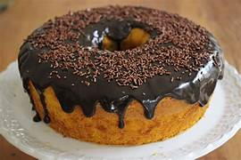

Bolo de Cenoura com cobertura de chocolate

Ingredientes para massa:
- 1/2 Xícara de óleo
- 4 Ovos
- 2 e 1/2 xícaras (chá) de farinha de trigo
- 3 cenouras médias raladas
- 2 xícaras (chá) de açúcar
- 1 colher (sopa) de fermento em pó
Ingredientes para a cobertura
- 4 Colheres (sopa) de leite
- 1 Colher (sopa) de manteiga
- Meia xícara (chá) de chocolate em pó
- 1 Xícara (chá) de açúcar
Modo de Preparo
Passo a passo para massa
- Em um liquidificador, adicione a cenoura, os ovos e o óleo, depois misture.
- Acrescente o açúcar e bata novamente por 5 minutos.
- Em uma tigela ou na batedeira, adicione a farinha de trigo e depois misture novamente.
- Acrescente o fermento e misture lentamente com uma colher.
- Asse em um forno preaquecido a 180° C por aproximadamente 40 minutos.
- Após ficar pronto espere esfriar para de desenformar.
Passo a Passo da cobertura
- Despeje em uma tigela a manteiga, o chocolate em pó, o açúcar e o leite, depois misture.
- Leve a mistura ao fogo e continue misturando até obter uma consistência cremosa, depois despeje a calda por cima do bolo.